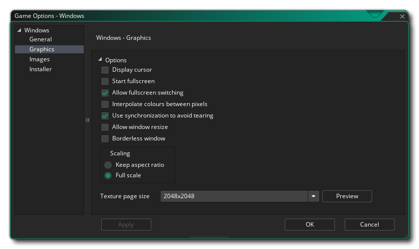

Cette section présente les différentes options disponibles qui contrôlent la compilation de vos projets de jeux Windows. Les différentes sections sont:
La page Général pour les jeux Windows est l'endroit où vous devez fournir les informations nécessaires pour Windows à afficher lorsque votre jeu a été installé et est en cours d'exécution. Ces informations vont dans la section Informations sur le produit et doivent être remplies complètement.
La section Options de cette fenêtre vous permet de choisir où le paquet de jeu doit être installé, soit " %localappdata% " ou " %appdata% Vous pouvez également définir la marge de veille Windows ici Cette option est liée à la réduction du bégaiement lors de l'exécution de votre jeu sur des systèmes spécifiques En gros, si votre jeu fonctionne plus vite que la vitesse de votre salle, GameMaker Studio 2 Cependant, ce sommeil peut être assez imprécis et vous pouvez souvent mettre fin à votre sommeil plus longtemps que nécessaire, ce qui fait que votre cadre prend plus de temps, ce qui cause le bégaiement. le reste du temps pour le rendre plus précis - bien que le problème de s'asseoir dans une boucle est qu'il augmente l'utilisation de l'UC, ce qui à son tour peut augmenter la température de votre CPU et accélérer votre ventilateur. réglé à 10, et dans 99,99% des cas, cela vous convient, mais pour les machines bas de gamme ou pour les machines avec beaucoup de processus d'arrière-plan, cette solution n'est peut-être pas idéale (ou pour les machines très haut de gamme) et une valeur de 1 ou 15 ou somethi ng peut être requis. Notez cependant qu'il s'agit d'une configuration spécifique au système et que ce qui fonctionne sur votre machine de construction n'est peut-être pas approprié pour un autre utilisateur, et en tant que tel, en cas de doute, laissez-le à 10.
La dernière option consiste à activer Steam dans votre jeu. Si vous activez cette option, assurez-vous que le SDK Steam Works est installé (voir ici ) et que vous avez ajouté l'ID de l'application Steam dans les Options générales du jeu.

Les options graphiques sont celles que vous devez configurer pour déterminer comment votre jeu utilisera la carte graphique de votre PC Windows cible. Les options suivantes sont incluses pour vous permettre de modifier:
- Curseur d'affichage: Lorsque cette case est cochée, le curseur de la fenêtre normale sera affiché, et si vous ne le décochez pas, aucun curseur ne sera affiché à moins d'en avoir créé un dans votre code de jeu. Ceci est activé par défaut.
- Start Fullscreen: Si cette case est cochée, le jeu commencera en mode plein écran sinon il démarrera en mode fenêtré. Ceci est désactivé par défaut.
- Autoriser la commutation en mode plein écran: Avec cette option, l'utilisateur peut passer de plein écran à fenêtré et vice-versa en utilisant les raccourcis Windows standard. Ceci est désactivé par défaut.
- Interpoler les couleurs entre les pixels: Active l'interpolation, qui "lisse" les pixels. Pour les graphismes en pixels nets, il doit être désactivé, mais si vous avez de beaux dégradés alpha et des graphismes lissés, il est préférable de laisser le bouton activé. Il est activé par défaut.
- Utilisez la synchronisation pour éviter la déchirure: cette option active ou désactive la synchronisation antivirus (v-sync est utilisée pour synchroniser la vitesse de mise à jour du jeu sur la fréquence de rafraîchissement du moniteur). Notez que si vous avez un jeu avec une vitesse de pièce de 120 et que le joueur a un moniteur avec un taux de rafraîchissement de 60, activer cette option verrouillera votre vitesse de jeu à 60 aussi. Ceci est désactivé par défaut.
- Autoriser le joueur à redimensionner la fenêtre de jeu: Cocher ceci permet à l'utilisateur de changer la taille de la fenêtre de jeu (l'option Fenêtre sans bordure doit être désactivée pour que cela fonctionne). Cette option est désactivée par défaut.
- Fenêtre sans marges: Si vous cochez cette case, votre jeu fonctionnera avec une fenêtre sans bordure, en supprimant les boutons minimaux, maximaux et fermés, ainsi que le titre du jeu. Ceci est désactivé par défaut.
- Mise à l'échelle: Ici, vous pouvez choisir de conserver le rapport d'aspect (de sorte qu'une pièce 4: 3 sera "boîte aux lettres" sur un 16: 9) ou à l'échelle complète (étirement de l'image pour s'adapter à l'écran).
ATTENTION! Si vous désactivez la surface d'application, toutes les options de mise à l'échelle définies dans les Options de jeu Windows sont désactivées jusqu'à ce que vous les réactiviez. Voir la surface d'application pour plus de détails.Enfin, il y a la possibilité de définir la taille de la page Texture. La taille par défaut (et la plus compatible) est 2048x2048, mais vous pouvez choisir n'importe où entre 256x256 jusqu'à un énorme 8192x8192! Il y a aussi un bouton marqué View qui va générer les pages de texture pour cette plate-forme, puis ouvrir une fenêtre pour que vous puissiez voir à quoi ils ressemblent. Cela peut être très utile si vous souhaitez voir comment les pages de texture sont structurées et éviter d'avoir des pages de texture plus grandes (ou plus petites) que nécessaire.
REMARQUE: sachez que plus la taille de la page de texture est grande, moins votre jeu sera compatible avec les PC dont les spécifications sont inférieures.
La section des images est l'endroit où vous fournissez les images dont votre jeu a besoin. Pour Windows, vous devez fournir un fichier d'icône (qui doit être dans .ico format) et aussi un écran de démarrage (qui peut être .png, .bmp, .jpg ou .gif format). L'écran d'accueil s'affiche pendant le chargement du jeu et peut être activé ou désactivé en cochant l'option Utiliser l'écran d' accueil (désactivée par défaut).
Il est à noter que GameMaker Studio 2 dispose d'un outil Project Image Generator qui peut être utilisé pour créer automatiquement toutes les images requises pour les différentes plates-formes cibles sur lesquelles votre jeu est compilé. Si vous utilisez cet outil, vous devez réviser les images créées pour vous assurer qu'elles correspondent à vos besoins.
Les jeux Windows peuvent être créés avec un programme d'installation et vous pouvez y définir les différents paramètres et graphiques que GameMaker Studio 2 utilisera lors de sa création. Tout d'abord, nous avons les options graphiques qui vont définir l'apparence de l'installateur lui-même:
- Terminé: Le graphique qui apparaît sur la page "Terminé" du programme d'installation. Doit être au format *.bmp et mesurer 164x314px.
- En - tête: le graphique qui apparaît pendant l'exécution du programme d'installation. Doit être au format *.bmp et mesurer 150x57px.
Vous pouvez également pointer vers un contrat de licence spécifique (un exemple est fourni avec GameMaker Studio 2 ) et un script NSI personnalisé (détails ici ) si vous en avez besoin.